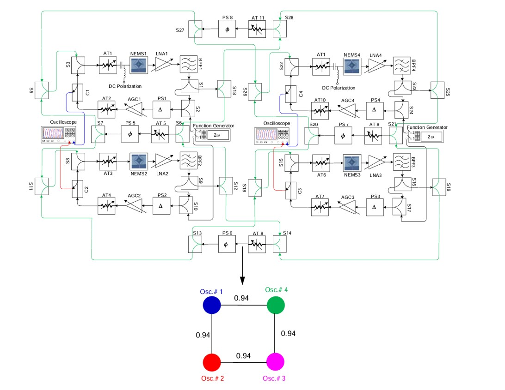

homeaboutoutreachresearchcoursework
I am an undergraduate research assistant in the
Feng Lab at
the University of Florida. My PI is
, and I
have been conducting research since December of 2025. I am currently involved
with two projects, one on oscillator computing and one on fabrication and characterization
of 2D resonators. Scroll down to learn more about my two projects.
A Nanoelectromechanical Oscillator Machine for Solving Max-Cut Problems
An oscillator computer exploits the synchronization dynamics of nonlinear
oscillators to solve combinatorial optimization problems. By inducing
sub-harmonic injection locking using an external signal generator, we can map
the phase states of the oscillators onto an Ising model which evolves towards
a collective ground state, which corresponds to a solution to combinatorial
optimization problems.

Circuit Diagram of Ising Machine. Figure referenced from page 168 of
Tahmid Kaiser's PhD thesis.
We've had preliminary results with a table-top setup, with results presented
at the 2026 Hilton Head Solid-State Sensors, Actuators, and Microsystems Workshop,
and won a Best Paper Award. This made us eligible to submit a Brief Report to
Nature Microsystems & Nanoengineering, which will hopefully be published soon.
I have been working to miniaturize our setup onto a PCB, with the hopes of reducing
component differences and instability to external perturbations. We then hope to
extend our knowledge of oscillator computing towards multiply-accumulate operations.
Fabrication of 2D Mo2 Resonators for Low-Temperature Experiments
Using my skills in nanofabrication started at the
Penn State REU, I will learn
to fabricate MoS2 resonators, with the goal of studying their
dynamics under low-temperature conditions at the High B/T Microkelvin Facilty on
campus. This project will allow us to study low-temperature resonance physics
while also potentially allowing us to explore quantum effects at high frequencies.